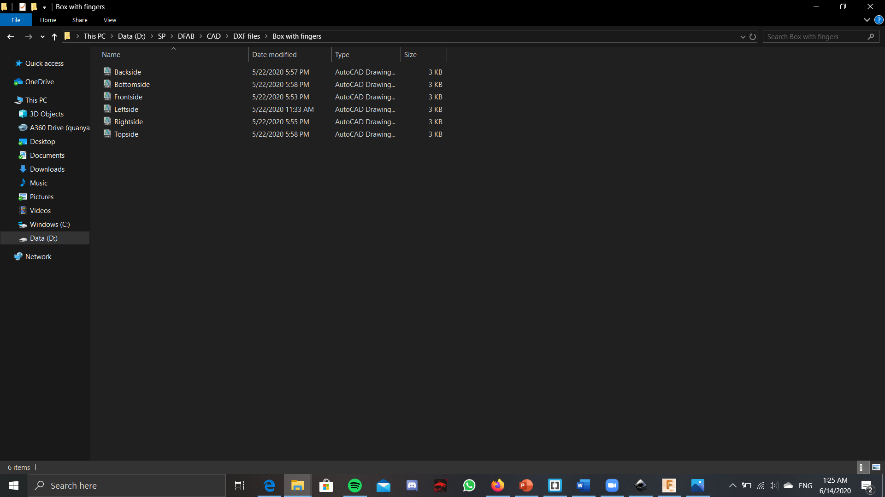
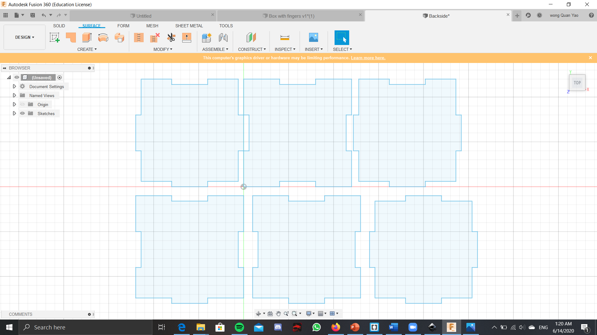
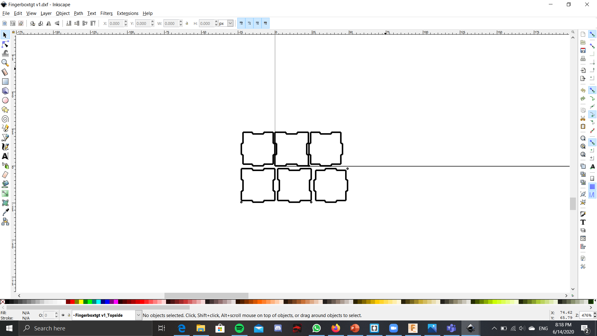
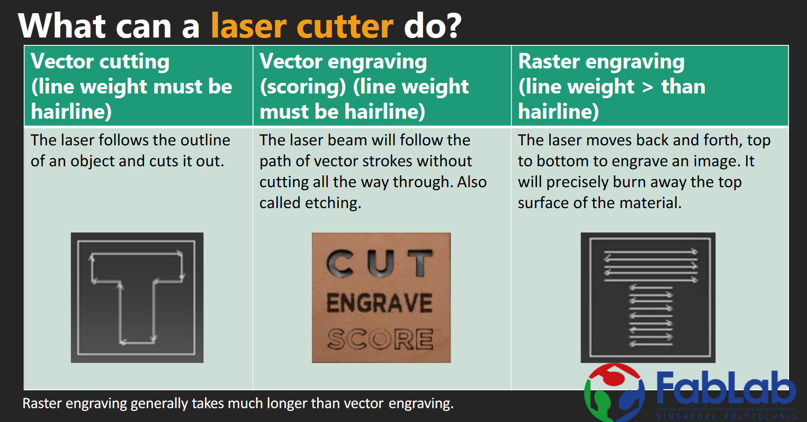

Laser cutting
For laser cutting, we have to use the software coreldraw. To do 3D printing, first we draw the model in fusion 360. Then we save the different sides of the model as its own sketches. From here, there are 2 things that could be done. The first option is the export each of these sketches as its own dxf file, then place it onto corealdraw software individually.

The 2nd method would be after u save the sides as its sketches, then you place all of the sides into a sketch. Then save this sketch with all of the slide as a dxf file. Afterwards, u place this dxf file in coreldraw. 

The second method, you would not need to care about the placement of the sides when the file is placed in coreldraw as you already adjusted it in fusion 360. On the other hand, if u use the 1st method, then you would need to adjust the sides in the coreldraw. Next for the laser cutting, you could have either cutting or engraving. Raster and vector can be set for engraving while Vector is set for cutting. Usually for all procudures, both the cutting and the engraving, you have to set the cut as a hairline cut, else unnesscary material might be lost, or even the dimension might become messed up as the laser might make too thick a cut.

Actually a quick tip, when engraving, remember to remove the sticker/paper on top. If you dont do this, then when engraving, the laser will only really cut the paper, and very little of the material, making it so that you can hardly see the engraving.
For the software, when uploading the file, if you are given the choice of where to place your sketch, put it at the top left corner, and also when placing in the file, DO NOT hold the left click, then place it. THis is mess up the size of your drawing and it will be different from that of the actual one. Just clicking once will be enough. Once you have uploaded the files onto the software, you have to pick the colour, red for cut and green for engraving. Next, set the length and width of the material that is being used. After this, choose when setting the settings of the colours and the cut, just pick open the file that matches with the material and the thickness and this will automatically set the settings.